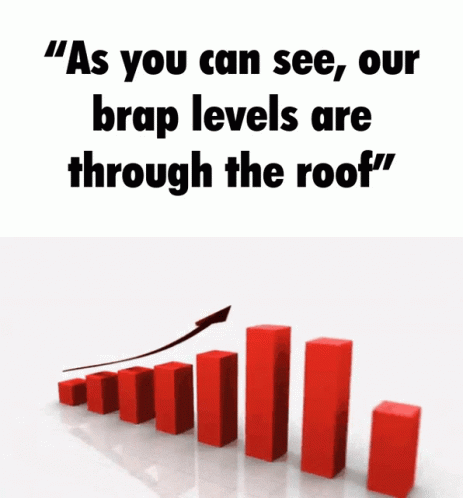

AGRICULTURE SECTOR

Agriculture is the largest employer in the world, providing employment for over 1.3 billion people globally.
The global agriculture industry is projected to reach $10.5 trillion by 2050.
Sustainable development is a concept that seeks to balance economic growth with the protection of the environment and social equity.
Awareness for sustainable development refers to the understanding of the importance of this concept and the steps that individuals
, organizations, and governments can take to promote it.
Creating awareness for sustainable development involves educating people about the issues and challenges related to sustainability, such
as climate change, loss of biodiversity, and unequal distribution of resources.
This can be achieved through various means, such as public campaigns, educational programs, and media coverage.
It is important to raise awareness for sustainable development because it encourages individuals to make changes in
their daily lives that can help protect the environment and support social justice.
It also helps to create a demand for sustainable products and services, which in turn drives
innovation and encourages companies and governments to adopt more sustainable practices.
, the goal of raising awareness for sustainable development is to create a more livable and equitable world for future generations.